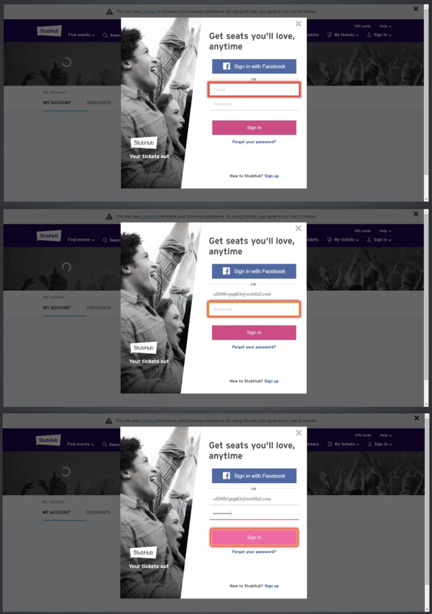
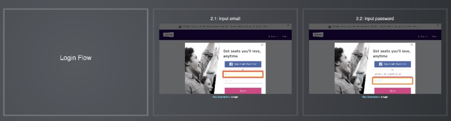
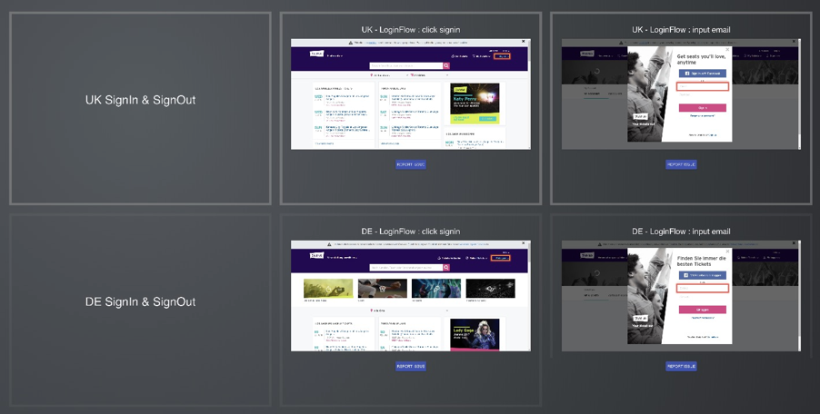

- 00 开篇词 从“小工”到“专家”，我的软件测试修炼之道.md.html
- 01 你真的懂测试吗？从“用户登录”测试谈起.md.html
- 02 如何设计一个“好的”测试用例？.md.html
- 03 什么是单元测试？如何做好单元测试？.md.html
- 04 为什么要做自动化测试？什么样的项目适合做自动化测试？.md.html
- 05 你知道软件开发各阶段都有哪些自动化测试技术吗？.md.html
- 06 你真的懂测试覆盖率吗？.md.html
- 07 如何高效填写软件缺陷报告？.md.html
- 08 以终为始，如何才能做好测试计划？.md.html
- 09 软件测试工程师的核心竞争力是什么？.md.html
- 10 软件测试工程师需要掌握的非测试知识有哪些？.md.html
- 11 互联网产品的测试策略应该如何设计？.md.html
- 12 从0到1：你的第一个GUI自动化测试.md.html
- 13 效率为王：脚本与数据的解耦 + Page Object模型.md.html
- 14 更接近业务的抽象：让自动化测试脚本更好地描述业务.md.html
- 15 过不了的坎：聊聊GUI自动化过程中的测试数据.md.html
- 16 脑洞大开：GUI测试还能这么玩（Page Code Gen + Data Gen + Headless）？.md.html
- 17 精益求精：聊聊提高GUI测试稳定性的关键技术.md.html
- 18 眼前一亮：带你玩转GUI自动化的测试报告.md.html
- 19 真实的战场：如何在大型项目中设计GUI自动化测试策略.md.html
- 20 与时俱进：浅谈移动应用测试方法与思路.md.html
- 21 移动测试神器：带你玩转Appium.md.html
- 22 从0到1：API测试怎么做？常用API测试工具简介.md.html
- 23 知其然知其所以然：聊聊API自动化测试框架的前世今生.md.html
- 24 紧跟时代步伐：微服务模式下API测试要怎么做？.md.html
- 25 不破不立：掌握代码级测试的基本理念与方法.md.html
- 26 深入浅出之静态测试方法.md.html
- 27 深入浅出之动态测试方法.md.html
- 28 带你一起解读不同视角的软件性能与性能指标.md.html
- 29 聊聊性能测试的基本方法与应用领域.md.html
- 30 工欲善其事必先利其器：后端性能测试工具原理与行业常用工具简介.md.html
- 31 工欲善其事必先利其器：前端性能测试工具原理与行业常用工具简介.md.html
- 32 无实例无真相：基于LoadRunner实现企业级服务器端性能测试的实践（上）.md.html
- 33 无实例无真相：基于LoadRunner实现企业级服务器端性能测试的实践（下）.md.html
- 34 站在巨人的肩膀：企业级实际性能测试案例与经验分享.md.html
- 35 如何准备测试数据？.md.html
- 36 浅谈测试数据的痛点.md.html
- 37 测试数据的“银弹”- 统一测试数据平台（上）.md.html
- 38 测试数据的“银弹”- 统一测试数据平台（下）.md.html
- 39 从小作坊到工厂：什么是Selenium Grid？如何搭建Selenium Grid？.md.html
- 40 从小工到专家：聊聊测试执行环境的架构设计（上）.md.html
- 41 从小工到专家：聊聊测试执行环境的架构设计（下）.md.html
- 42 实战：大型全球化电商的测试基础架构设计.md.html
- 43 发挥人的潜能：探索式测试.md.html
- 44 测试先行：测试驱动开发(TDD).md.html
- 45 打蛇打七寸：精准测试.md.html
- 46 安全第一：渗透测试.md.html
- 47 用机器设计测试用例：基于模型的测试.md.html
- 48 优秀的测试工程师为什么要懂大型网站的架构设计？.md.html
- 49 深入浅出网站高性能架构设计.md.html
- 50 深入浅出网站高可用架构设计.md.html
- 51 深入浅出网站伸缩性架构设计.md.html
- 52 深入浅出网站可扩展性架构设计.md.html
- 测试专栏特别放送 浅谈全链路压测.md.html
- 测试专栏特别放送 答疑解惑第一期.md.html
- 测试专栏特别放送 答疑解惑第七期.md.html
- 测试专栏特别放送 答疑解惑第三期.md.html
- 测试专栏特别放送 答疑解惑第二期.md.html
- 测试专栏特别放送 答疑解惑第五期.md.html
- 测试专栏特别放送 答疑解惑第六期.md.html
- 测试专栏特别放送 答疑解惑第四期.md.html
- 结束语 不是结束，而是开始.md.html
- 捐赠
18 眼前一亮：带你玩转GUI自动化的测试报告
在GUI自动化测试系列的文章中，我围绕着GUI自动化测试进行了各种讨论：从最原始的GUI测试谈起，逐渐引入了脚本与数据的解耦，并谈论了页面对象模型，以及在此基础上的业务流程模型，接着分享了一些GUI自动化测试过程中的新技术，最后和你讨论了GUI自动化测试的稳定性问题。
今天，我会再和你聊聊GUI自动化测试过程中另外一个很实用的部分：GUI自动化测试报告。
GUI测试报告是GUI自动化测试的重要组成部分，当有任何的测试用例执行失败时，我们首先就会去分析测试报告，希望从中看到测试用例到底是在哪一步出错了，错误发生时被测系统是在哪个页面上，并且前序步骤又是哪些页面等等。
早期的基于视频的GUI测试报告
为了分析测试用例的执行过程与结果，早期就出现了基于视频的GUI测试报告。也就是说，GUI自动化测试框架会对测试执行整个过程进行屏幕录像并生成视频。
这种基于视频的测试报告可以提供清晰的GUI测试执行上下文，看起来也很不错。但是，这种方式主要的问题是：
报告的体积通常都比较大，小的几MB，大的上百MB，这对测试报告的管理和实时传输非常不利。
分析测试报告时，往往需要结合测试用例以及服务端的日志信息，视频报告这一点上也有所欠缺。
所以，理想中的GUI测试报告应该是由一系列按时间顺序排列的屏幕截图组成，并且这些截图上可以高亮显示所操作的元素，同时按照执行顺序配有相关操作步骤的详细描述。
但是，早期的商业GUI自动化测试软件也只是具备最基本的顺序截图，并不具备高亮所操作元素的功能，后来商用工具厂商根据用户的实际使用反馈，逐渐完善和改进。
目前，商业的GUI自动化测试软件，比如使用最为广泛的UFT（就是以前的QTP），已经自带了截图以及高亮显示操作元素功能。也就是说，使用UFT执行一个GUI自动化测试用例，你无需做任何额外的工作，就能得到一份比较理想的GUI测试报告。
开源GUI测试框架的测试报告实现思路
但是，如果你使用的是开源软件，比如Selenium WebDriver，那就需要自己去实现截图以及高亮显示操作元素的功能。实现的思路通常是：
利用Selenium WebDriver的screenshot函数在一些特定的时机（比如，页面发生跳转时，在页面上操作某个控件时，或者是测试失败时，等等）完成界面截图功能。
具体到代码实现，通常有两种方式：
扩展Selenium原本的操作函数；
在相关的Hook操作中调用screenshot函数。
下面，我会分别针对这两个实现方式，给出具体的示例，帮你理解并实现这个功能。
第一，扩展Selenium原本的操作函数实现截图以及高亮显示操作元素的功能
既然Selenium原生的click操作函数并不具备截图以及高亮显示操作元素的功能，那我们就来实现一个自己click函数。
当自己实现的click函数被调用时：
- 首先，用Javascript代码高亮显示被操作的元素，高亮的实现方式就是利用JavaScript在对象的边框上渲染一个5-8个像素的边缘；
- 然后，调用screenshot函数完成点击前的截图；
- 最后，调用Selenium原生的click函数完成真正的点击操作。
那么，以后凡是需要调用click函数时，都直接调用这个自己封装的click函数，直接得到高亮了被操作对象的界面截图。
如图1所示，就是用这种方式产生的界面截图，图中依次显示了登录过程中每一个操作的控件，第一张高亮了“Username”的输入框，因为自动化代码会在“Username”框中输入用户名；第二张高亮了“Password”的输入框，因为自动化代码会在“Password”框中输入密码；第三张高亮了”Sign in“按钮，因为自动化代码会去点击这个按钮。

图1 GUI界面的时间顺序截图示例
第二，在相关的Hook操作中调用screenshot函数实现截图以及高亮显示操作元素的功能
其实使用Hook的方法比较简单和直观，但是你首先要理解什么是Hook。
Hook中文的意思是“钩子”，直接通过定义介绍什么是“钩子”会有些难以理解，那么我就通过一个实例来跟你解释一下。
当执行某个函数F时，系统会在执行函数F前先隐式执行一个空实现的函数，那么当你需要做一些扩展或者拦截时，就可以在这个空实现的函数中加入自定义的操作了。那么这个空实现的函数就是所谓的Hook函数。
这样的例子有很多，比如Java的main函数，系统在执行main函数之前会先在后台隐式执行premain函数；JUnit和TestNG，都有所谓的BeforeTest和AfterTest方法，这些都是可以在特定步骤的前后插入自定义操作的接口。
说到这里，你可能已经知道要怎么做了：我可以在这些Hook函数中添加截图、元素高亮，以及额外的任意操作，比如更多的详细日志输出等等。
另外，我在前面的文章中分享了基于业务流程的脚本封装，你可以再思考一下，如何在GUI报告中体现出业务流程的概念，这样的测试报告会具有更好的可读性。
比如，图2所示的GUI测试报告就显示了具体的Flow名称。这个功能，就是通过Hook函数实现的。
具体的实现逻辑也比较简单的，就是在Flow开始的第一个Hook函数中调用增加报告页的函数，并在这个新增的报告页中输出Flow的名字。

图2 在GUI测试报告中体现业务流程
上面所讲的GUI测试报告都是针对一个国家的，当面对多个国家站点的GUI测试时，事情就会变得更加复杂，你就必须去考虑全球化GUI测试报告应该如何设计。
全球化GUI测试报告的创新设计
所谓全球化测试是指，同一个业务在全球各个国家都有自己网站。比如，一些大型全球化电商企业在很多国家都有自己的站点，那么对这些站点的测试除了要关注基本的功能，以及各个国家特有的功能外，还要去验证界面布局以及翻译在上下文环境中是否合适。
早期的做法是，雇佣当地的测试工程师，由他们手工执行主要的业务场景测试，并验证相关的页面布局，以及翻译内容与上下文中的匹配度。在当地专门雇佣的这些测试工程师，被称为LQA。
显然，聘请LQA的效率非常低，主要原因是：全部测试工作都由LQA在项目后期手工执行，执行前还需要对他们进行业务培训；同时，我们需要准备非常详尽的测试用例文档，LQA也要花很大的精力去截图并完成最终的测试报告。
为了解决这种低效的模式，最好的解决方法就是：利用GUI自动化测试工具生成完整的测试执行过程的截图。这样，LQA就不再需要去手工执行测试用例了，而是直接分析测试报告中业务操作过程中GUI界面截图就可以了，然后发现页面布局问题或者是不恰当的翻译问题。
这个方案看起来已经比较完美了，LQA的工作重点也更清晰了，但这并不是最优的方案。因为这些LQA在实际工作中，还会有以下三个比较痛苦的地方：
需要经常在多个国家的测试报告之间来回切换去比较页面布局；
需要频繁切换到美国网站（也就是主站）的报告，去比较翻译内容与上下文的匹配度；
发现缺陷后，还是需要从GUI测试报告中复制截图，并用图像软件标注有问题的点，然后才能打开缺陷管理系统递交缺陷报告。
为了解决这三个问题，我建议你建立以下形式的测试报告。这里有一张图片展示了一份包含多国语言比较报告的示例，听音频的用户可以点击文稿查看如图3所示。

图3 多国语言比较报告
报告的横向，是一个国家的业务测试顺序截图，比如图中第一行是英国网站的登录业务流程顺序截图，第二行是德国网站的登录业务流程顺序截图。报告的纵向，展示的自然就是同一界面在不同国家的形式了。
整个报告可以用键盘上下左右依次移动。可想而知，这样的GUI测试报告设计一定可以大幅提高LQA的效率。
同时，由于这个GUI测试报告是基于Web展现的，所以我们可以在测试报告中直接提供递交缺陷的按钮，一旦发现问题直接递交缺陷，同时还可以把相关截图一起直接递交到缺陷管理系统，这将更大程度地提高整体效率。
那么，怎么才能在技术上实现测试报告和缺陷管理系统的交互呢？其实，现今的缺陷管理系统往往都有对外暴露API接口，我们完全可以利用这些API接口来实现自己的缺陷递交逻辑。
这种测试报告的形式就是eBay在全球化站点测试中采用的方案，目前已经取得了很好地效果，降低了工作量的同时，还大幅度提高了全球化测试的质量。
总结
好了，希望上面的测试报告设计方法可以让你有眼前一亮的感觉。接下来，我总结一下今天的主要知识点。
早期基于视频的GUI测试报告由于体积较大，而且不能比较方便地和日志适配，所以并不是最好的解决方案。理想的GUI测试报告应该是由一系列按时间顺序的屏幕截图组成，并且可以在这些截图上高亮你所操作的元素，同时按照执行时序配有相关操作步骤的详细描述。
商业GUI自动化测试框架的GUI测试报告已经做得非常成熟，通常不需要做额外的定制或者开发。但是开源GUI自动化测试框架的GUI测试报告往往需要自己来开发，主要使用了扩展Selenium原本的操作函数的方式以及Hook函数来实现。
最后，我介绍了eBay面对全球化测试过程中GUI测试报告的创新设计，希望你也可以借鉴这种方法。
思考题
如果自己去开发GUI测试报告的功能，你还能想到其他更多实用的功能吗？你又是如何实现这些功能的？
欢迎你给我留言。
© 2019 - 2023 Liangliang Lee. Powered by gin and hexo-theme-book.